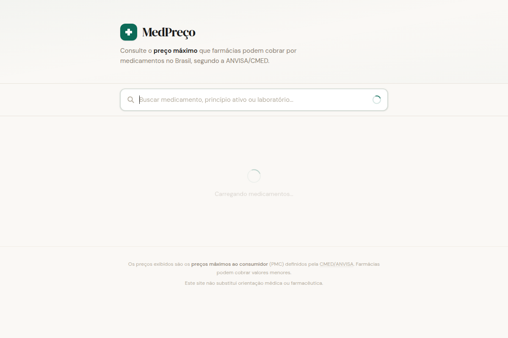

A job board connecting general practitioners with opportunities across Brazil, focused on smaller and rural cities. Aggregates public job postings with salary data and weekly updates via email and WhatsApp.
Visit mediconointerior.com →
medpreco.comA medication price lookup tool covering 23,000+ drugs in the Brazilian market. Search by name, active ingredient, or manufacturer to find maximum consumer prices set by ANVISA/CMED.
Visit medpreco.com →Work in progress — projects I'm currently building or experimenting with.
A resource hub for recently graduated doctors. Curated links to residency prep courses, certifications (ACLS, ATLS, PALS), job boards, and useful tools for ER shifts and primary care.
Patient management platform for a subscription-based practice. Track health records, medications, exams, screening schedules, and emergency contacts for up to 100 patients.
Flowchart-based tool for evaluating common ER complaints — chest pain, shortness of breath, dizziness, abdominal pain, fever, and back pain. Each complaint gets its own decision tree.
Tells you which health screening exams you should do based on your age and existing conditions.
Recommends which vaccines you should take based on your age and health profile.
A personal medical CV site focused on emergency medicine — training, experience, certifications, and contact info, all in one page.
An e-commerce catalog for ER doctors to find medical supplies. Tracks demand through outbound clicks before building out full sales or dropshipping.
GitHub →A tool for learning and practicing heart and lung auscultation sounds through audio samples.
GitHub →I'm a physician based in Brazil. I use AI to build tools that help with problems I run into in my day-to-day medical practice — things like finding job opportunities in underserved areas or looking up medication prices. Nothing fancy, just useful stuff.
Contact me: mascarenhasluz@gmail.com